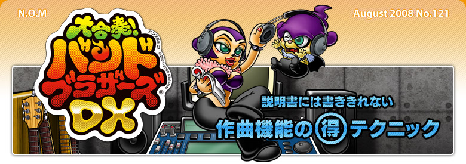

曲を作ったあとは、「音量バランス」と「ステレオバランス」の調整をおすすめします。「音量バランス」は各楽器の音量を個別に変更する機能、「ステレオバランス」は各楽器の音がスピーカーの右から聞こえるか左から聞こえるかを変更する機能です。
任天堂制作曲を例に取ると、メロディ・ベース・ドラムパートは中央に、その他のパートは左右どちらかに偏りすぎないよう均等に配置されています。

音色調整機能を使えば、こんな音色も作れます。


診断結果にはポップスタイプ、ロックタイプ、アイドルタイプ、Ｒ＆Ｂタイプ、演歌タイプ、ムード歌謡タイプ、バラードタイプ、フォークタイプ、ヒップホップタイプ、アニソンタイプの１０種類がありますが、それ以外に２種類のレア診断結果もあるようですよ。
ギター演奏の際に下画面に表示されるギターですが、演奏を続けているとピックの引っかきキズが残っていきます。また、実はギターの色や木目も数種類あるので友達と見比べてみても面白いかも。